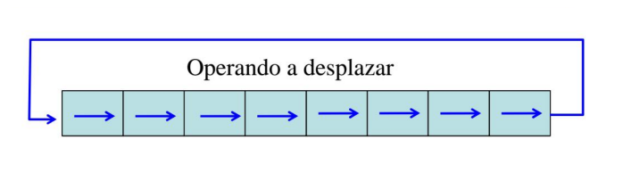

En la arquitectura de computadores analiza los conceptos básicos de análisis, capacidad rapidez y costo de hardware para un eficiente análisis de transferencia de datos entre procesos y registros Para esto se necesita de elementos de hardware como memoria, discos magnéticos todos estos dispositivos tienen para su manejo dirección y lenguaje de transferencia de registros
Un sistema digital es una interconexión de Módulos de hardware digital que realizan una tarea específica de procesamiento de información.
Las operaciones que se ejecutan sobre los datos almacenandos en los registros se llaman MICROOPERACIONES
Los módulos se construyen a partir de componentes digitales como registros, decodificadores, elementos aritméticos y lógica de control.
Los módulos se definen por registros que contienen y las operaciones que se realizan sobre los datos que se almacenan.
Es una operación básica realizada sobre la información almacenada en uno o mas registros.
Ejemplo: desplazar, contar, borrar y cargar.
La organización interna del hardware se define al especificar:
1. Conjunto de registros que contiene y sus funciones.
2. La secuencia de microoperaciones que se realizan sobre la información binaria almacenada en los registros.
3. El control que inicia la secuencia.
La notación simbólica que se utiliza para describir las transferencias de microoperaciones entre registros se llama (lenguaje de transferencia de registros)
Es un sistema para expresar de manera simbólica, las secuencias de las microoperaciones entre los registros de un módulo digital.
Los registros de una computadora están representados por rectángulos identificados por letras (o seguidas de números)
* Transferencia de un registro a otro
R2 <= R1
* Función de Cotrol
P: R2 <= R1
* Función de operaciones al mismo tiempo
T: R2 <= R1, R1 <= R2
Simbolos básicos para transferencia de registros
| Símbolo | Descripción | Ejemplo |
|---|---|---|
| Letra y y números | Representa un registro | MAR, R2 |
| Paréntesis () | Representa parte de un registro | R2(0-7), R2(L) |
| Flecha<= | Representa transferencia de información | R2<=R1 | Coma, | Separa dos microoperaciones | R2<=R1, R1<=R2 |
Para transferir información entre los registros se utiliza el bus(canal común).
Una manera de construir un sistema de bus común es con multiplexores.
BUS <= C, R1 <= BUS El contenido del registro C, se coloca en el bus, y el contenido del bus se carga en el registro R1
Si se sabe que el bus existe en el sistema puede ser conveniente mostrar sólo la transferencia directa.
R1 <= C
Una compuerta de tres estados es un circuito digital que exhibe tres valores.
Dos de los estados son señales equivalentes a los números 1 y 0 lógicos. El tercero es un estado de alta impedancia.
El estado de alta impedancia actúa como un circuito abierto, lo que significa que la salida está desnectada y no tiene importacia lógica.
Las salidas de cuatro acopladores se conectan juntas para formar una línea de bus única. Las entradas de control a los acopladores determinan cuál de las cuatro entradas normales se comunicará con la línea de bus.
Una manera de asegurar que no está activa más de una entrada de control en cualquier momento dado, es mediante el uso de un decoficador.
Cuando la entrada habilitada del decodificador es 0, todas sus cuatro salidas son 0, y la línea del bus se halla en estado de alta impendancia, porque los cuantro acopladores están inhabilitados.
La transferencia de información de una palabra de memoria externa se llama operación de lectura
DR <= M [AR]
La transferencia de nueva información para almacenar en la memoria se llama operación de escritura.
M [AR] <= R1
Una microoperación es una operación elemental efectuada con los datos almacenandos en los registros, se clasifican en:
1. Microoperaciones de transferencia de registros que transfieren información binaria de un registro a otro.
2. Microoperaciones ariméticas que ejecutan operaciones ariméticas sobre datos numéricos almacenados en los registros.
3. Microoperaciones lógicas que ejecutan operaciones de manipulación de bits sobre datos no numéricos almacenado en los registros.
4. Microoperaciones de desplazamiento que ejecuntan operaciones de desplazamiento sobre los datos almacenados en los registros.
| Representación Simbólica | Descripción |
|---|---|
| R3 <= R1 + R2 | El contenido de R1 más R2 transferido a R3 |
| R3 <= R1 - R2 | El contenido de R1 menos R2 transferido a R3 |
| R2 <= R2 | Complementa el contenido de R2 (Ca 1 ) |
| R2 <= R2 + 1 | Complemento de a 2 de R2 |
| Representación Simbólica | Descripción |
|---|---|
| R3 <= R1 + R2 + 1 | R1 más el complemento de a 2 de R2 |
| R1 <= R1 + 1 | Incrementado el contenido de R1 en uno |
| R1 <= R1 - 1 | Decrementar el contenido de R1 en uno |
El circuito digital que genera la suma aritmética de dos números binarios de cualquier longitud se llama sumador binario.
Las operaciones de suma y de resta se pueden combinar en un circuito común al incluir una compuerta OR exclusiva con cada sumador completo
Las microoperaciones lógicas especifican operaciones lógicas binarias para arreglos de bits almacenados en registros.
P: R1 <= R1 + R2
R1:1010
R2:1100
R1:0110
Las microoperaciones de desplazamiento se usan para la transferencia serial de datos.
| Representación Simbólica | Descripción |
|---|---|
| R <= SHL R | Desplazamiento a la izquierda del registro R |
| R <= SHR R | Desplazamiento a la derecha del registro R |
| Representación Simbólica | Descripción |
|---|---|
| R <= CIL R | Desplazamiento circular a la izquierda del registro R |
| R <= CIR R | Desplazamiento circular a la derecha del registro R |
| R <= ASHL R | Desplazamiento aritmético a la izquierda del registro R |
| R <= ASHR R | Desplazamiento aritmético a la derecha del registro R |
R <= SHL R
R <= SHR R
R <= CIL R
R <= CIR R

R <= ASHL R
R <= ASHR R
En lugar de tener registros individuales ejecutando microoperaciones en forma directa, los sistemas computacionales emplean cierta cantidad de registros de almacenamiento
conectados a todas las unidades operacionales comunes, la cual se denomina ALU
1° AUL <= R
2° AUL ejecuta la operación
3° R <= AUL